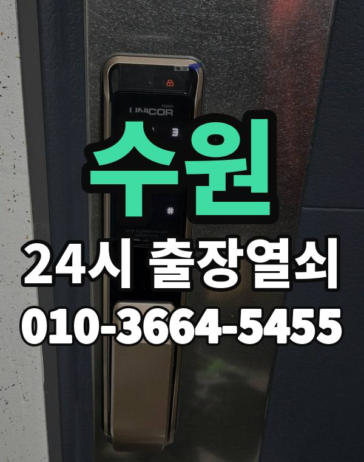

수원 출장열쇠, 이런 동네입니다
수원은 영통, 광교 아파트 단지와 권선, 장안구 주택가, 인계동 상가와 오피스텔까지 생활권이 넓습니다.
영통 쪽은 입주한 지 오래된 단지가 많아 도어락 교체 연락도 꾸준합니다.

수원시 출장 가는 동네
- 영통동
- 매탄동
- 원천동
- 망포동
- 광교동
- 인계동
- 권선동
- 세류동
- 정자동
- 조원동
- 율전동
- 천천동
- 화서동
- 호매실동
- 금곡동
- 우만동
- 파장동
- 연무동
영통동 출장열쇠, 매탄동 열쇠집처럼 동네 이름으로 찾으셨어도 같은 곳입니다.
적혀 있지 않은 동네도 수원시 안이면 다 갑니다.
수원에서 하는 일
수원 출장 부르실 때
구가 네 개라 동 이름을 먼저 알려주시면 도착 시간을 정확히 말씀드릴 수 있습니다.
인계동 상가와 사무실 출입문도 출동합니다.
수원역, 영통역, 광교중앙역, 성균관대역 근처라고 말씀해 주셔도 위치 잡기가 쉬워집니다.
가까운 역이나 큰 건물, 단지 이름을 같이 알려주세요.
- 정확한 주소, 아파트라면 동과 호수
- 번호판 상태 (꺼짐, 켜짐, 경고음)
- 거주 확인용 신분증이나 주소 나온 우편물
전화부터 작업까지 순서는 이용안내에 적어 두었습니다.
수원 출장열쇠 관련 글
- 수원 천천동 아이나 반려동물이 집 안에 있는데 문이 잠겼을 때 해야 할 일
- 수원 천천동 택배 받으러 잠깐 나갔다 문이 잠겼을 때 해야 할 일
- 수원 천천동 번호와 카드를 함께 쓰는 도어락 이중 인증 설정 안내
- 수원 천천동 열쇠가 안 돌아가고 안 빠질 때 실린더 문제 대처법
- 수원 천천동 도어락 건전지 종류 알카라인과 리튬 고르는 법, 추운 날 대비
- 수원 천천동 스마트폰 NFC·블루투스 도어락이 갑자기 안 열릴 때 원인 확인
- 수원 천천동 도어락 비밀번호 주기적 변경 가족 공유 관리하는 법
- 수원 천천동 출장열쇠 작업 전에 안내받는 비용 확인 순서
- 수원 천천동 USB 비상 전원 단자가 있는 도어락, 방전됐을 때 쓰는 법
- 수원 천천동 주말 공휴일에 현관문이 안 열릴 때 연락 요령과 준비물
- 수원 금곡동 문 열고 난 뒤 점검할 것, 같은 일이 또 생기지 않게 하는 순서
- 수원 금곡동 얼굴 인식 도어락 도입 전 꼭 확인할 것과 설치 점검 방법
- 수원 금곡동 손이 젖거나 건조할 때 지문 도어락이 안 읽히는 이유
- 수원 금곡동 겨울 결로 장마 습기로 도어락 오작동할 때 대처법
- 수원 금곡동 김장·베란다 작업 중 문이 잠겼을 때 대처법과 출장열쇠 안내
- 수원 금곡동 자석식 출입문 잠금장치 점검 방법과 안 잠길 때 출장열쇠 부르는 때
- 수원 금곡동 원룸 오피스텔 출입문이 잠겨 못 들어갈 때 대처법
- 수원 금곡동 인테리어 공사 중 현관 도어락 보호하고 임시로 쓰는 방법
- 수원 금곡동 스마트폰을 잃어버려 도어락 앱을 못 쓸 때 문 여는 순서
- 수원 광교동 아기방 문이 안에서 잠겼을 때 놀라지 않고 여는 순서
- 수원 광교동 베란다·미닫이문 잠금장치 고장 났을 때 출장열쇠 부르기 전 확인
- 수원 광교동 요양보호사 방문 때 도어락 비밀번호 전달하는 요령
- 수원 광교동 도어락 외관 흠집과 교체 시 남는 타공 자국 줄이는 법
- 수원 광교동 데드볼트가 안 들어가거나 안 빠질 때 출장열쇠 확인할 것
- 수원 광교동 배달 일 하는 가족이 늦게 돌아와 현관문이 안 열릴 때
- 수원 광교동 도어락 설치 시간은 얼마나 걸리나 미리 준비할 것 정리
- 수원 광교동 전세 계약 끝날 때 도어락 비밀번호 인계하는 방법
- 수원 광교동 교대근무자와 새벽 귀가자를 위한 도어락 사용 요령
- 수원 광교동 뒷문·쪽문·후문이 잠겨 안 열릴 때 확인할 점
- 수원 광교동 스마트 도어락 고르는 법 지문 카드 비밀번호 무엇이 맞을까
- 수원 광교동 스마트 도어락 교체 시기 고르는 법과 출장열쇠 설치 순서
- 수원 권선동 가을 이사철 도어락 일정 맞추는 순서와 준비물
- 수원 권선동 소규모 병원·의원 출입문이 잠겼을 때 출장열쇠 대처법
- 수원 권선동 현관문 쿵 소리 삐걱임 뻑뻑함 원인과 손보는 순서
- 수원 권선동 전단지·간판만 보고 열쇠집 부르기 전에 꼭 확인할 것
- 수원 권선동 열쇠 분실 문 잠그고 나왔을 때 출장열쇠 부르는 순서
- 수원 권선동 도배·페인트 작업 뒤 도어락 틈에 이물질이 끼어 안 열릴 때
- 수원 권선동 도어락 사진을 미리 찍어 두면 출장열쇠 부를 때 편한 이유
- 수원 권선동 비 오는 밤 출장열쇠 부를 때 미리 알려두면 좋은 것
- 수원 권선동 철문과 목문 도어락 고르기 문 재질별 확인할 점
- 수원 권선동 여름 열기와 습기로 현관문이 뻑뻑할 때 출장열쇠 점검 순서
- 수원 권선동 문풍지와 고무 패킹이 두꺼워 현관문이 안 닫힐 때 해결법
- 수원 호매실동 화장실 문 걸쇠가 안에서 걸렸을 때 안전하게 여는 법
- 수원 호매실동 공장 사무동 출입문과 야간 출입 문제, 출장열쇠 부르는 요령
- 수원 호매실동 도어락 설치 전 문 두께 보조키 확인할 것 정리
- 수원 호매실동 현관 손잡이 모양별 고장 증상, 레버형과 밀고당김형 비교
- 수원 호매실동 세입자·집주인 도어락 고장 났을 때 먼저 확인할 것
- 수원 호매실동 문이 잠겼을 때 위치 공유를 보내는 요령과 출장열쇠 출동 안내
- 수원 호매실동 이사 후 도어락 비밀번호 초기화, 이전 입주자 번호 지우는 법
- 수원 호매실동 문이 잠겼을 때 이웃과 경비실에 도움 구하는 순서와 예의
- 수원 호매실동 야간 근무 뒤 귀가했는데 문이 안 열릴 때 출장열쇠
- 수원 호매실동 도어락 예비 건전지 보관 위치, 어디에 두면 문 앞에서 쓸 수 있을까
- 수원 호매실동 봄철 황사·꽃가루에 도어락 번호판이 둔해질 때
- 수원 화서동 인테리어 공사 인력에게 열쇠를 맡길 때 출장열쇠가 권하는 방법
- 수원 화서동 소형 헬스장·필라테스 스튜디오 출입문이 안 열릴 때 출장열쇠 이용법
- 수원 화서동 도어락 비밀번호 분실 가족이 바꾼 번호 모를 때 출장열쇠 대처
- 수원 화서동 손주가 방문할 때 쓰기 쉬운 도어락 번호 정하는 법
- 수원 화서동 가사도우미·손님에게 임시 비밀번호 줄 때 지켜야 할 것
- 수원 화서동 열쇠 방식 현관문을 번호키로 바꾸기 전에 따져볼 것
- 수원 화서동 차 안에 열쇠를 두고 문을 잠갔을 때 현관 대응 순서
- 수원 화서동 입주·퇴거 때 도어락 확인할 것, 비밀번호 정리부터 출장열쇠까지
- 수원 화서동 도어락 연초 분기 점검 루틴 만들기, 배터리부터 경첩까지
- 수원 화서동 식당 주방 뒷문과 창고 열쇠 문제 출장열쇠로 해결하는 방법
- 수원 화서동 빌라 다세대 공동현관과 세대 현관문이 잠겼을 때
- 수원 인계동 학원·교습소 출입문과 강의실 문이 안 열릴 때 점검과 출장 요령
- 수원 인계동 한파에 도어락이 느리거나 꺼질 때 출장열쇠 부르기 전 확인
- 수원 인계동 현관 방범 점검 요령, 도어락과 문틀 이렇게 확인하세요
- 수원 인계동 도어락 비밀번호가 기억 안 날 때 가족이 바꾼 번호까지 확인법
- 수원 인계동 상가 유리문 하단 잠금장치가 안 열릴 때 확인할 것
- 수원 인계동 인터폰 열림 버튼을 눌러도 공동현관문이 안 열릴 때
- 수원 인계동 집주인 마스터 번호 사용 시 주의점과 도어락 점검
- 수원 인계동 오피스텔 상가 출입문 잠김 출장열쇠로 안전하게 여는 법
- 수원 인계동 옥상 출입문 잠금과 열쇠 보관 어떻게 해야 할까
- 수원 인계동 여름 열기와 습기로 현관문이 뻑뻑해질 때 원인과 대처
- 수원 인계동 창고와 컨테이너 사무실 출입문 잠금 문제 해결 방법
- 수원 정자동 지하 주차장 출입문과 기계실 문이 안 열릴 때 확인할 것
- 수원 정자동 열쇠집 통화 중 상호와 전화번호 확인하는 방법
- 수원 정자동 현관문 안 열림 도어락 번호는 맞는데 문이 안 빠질 때
- 수원 정자동 도어락 삐 소리가 길게 짧게 울릴 때 소리별 뜻 구분하기
- 수원 정자동 현관문이 덜 닫힐 때 경첩과 도어클로저 점검 순서
- 수원 정자동 집주인과 세입자가 도어락 문제를 정리할 때 먼저 확인할 것
- 수원 정자동 도어락 삑 소리만 나고 안 열릴 때, 소리로 원인 구분하는 법
- 수원 정자동 장마 끝난 뒤 문이 부풀어 문틀에 끼어 안 열릴 때
- 수원 정자동 반려동물 때문에 도어락 센서가 오작동할 때 점검법
- 수원 정자동 문틀 받음쇠 위치가 어긋나 현관문이 안 잠기고 안 열릴 때
- 수원 조원동 도어락 배터리가 다 돼 번호판이 꺼졌을 때 해결 순서
- 수원 조원동 카드키·태그 추가 등록과 초기화 요령 총정리
- 수원 조원동 전기 걸쇠 전기정 출입문이 안 풀릴 때 원인과 점검법
- 수원 조원동 아침 안개와 결로로 도어락 번호판이 오작동할 때
- 수원 조원동 현관문 덜 닫힘 경첩 도어클로저 점검 출장열쇠
- 수원 조원동 래치가 들어가지 않아 문이 안 닫힐 때 출장열쇠 점검 순서
- 수원 조원동 한밤 새벽에 현관문이 안 열릴 때 전화 요령과 대처 순서
- 수원 조원동 도어락 9V 비상 전원 사용법과 한계, 안 될 때 출장열쇠 부르기
- 수원 조원동 도어락 교체 전에 확인할 것, 출장열쇠 비용은 이렇게 안내합니다
- 수원 조원동 눈이 녹아 얼면서 현관문 아래가 얼어붙어 안 열릴 때
- 수원 매탄동 공동현관 비밀번호가 안 먹힐 때 세대 현관과 구분해 확인하는 법
- 수원 매탄동 도어락 배터리 방전, 번호판이 꺼졌을 때 순서대로 해보세요
- 수원 매탄동 열쇠가 부러져 열쇠 구멍에 박혔을 때 대처법
- 수원 매탄동 단지 정전 때 모든 세대 도어락이 겪는 문제와 대처
- 수원 매탄동 현관문 틈새 바람과 소음, 문이 제대로 닫혔는지 보는 법
- 수원 매탄동 계단실 방화문이 닫히며 잠겨 집에 못 들어갈 때 대처법
- 수원 매탄동 입주 첫 달에 해볼 도어락 점검 순서
- 수원 매탄동 열쇠가 안 돌아갈 때·안 빠질 때 출장열쇠 부르기 전 확인
- 수원 매탄동 원룸 현관문 잠겼을 때 집주인 연락 전에 확인할 것
- 수원 매탄동 공동 사무실과 공유 공간 열쇠 비밀번호 관리 방법
- 수원 매탄동 셔터 옆 쪽문 열쇠가 안 맞거나 안 열릴 때 확인할 것
- 수원 매탄동 창문 잠금장치가 헐거울 때 환기 전에 점검할 것
- 수원 망포동 도어락 자동 잠김 시간 설정이 헷갈릴 때 확인 방법
- 수원 망포동 대학가 신입생 자취방 첫 도어락 사용법과 문 잠김 대처
- 수원 망포동 데드볼트가 안 들어가거나 안 빠질 때 원인과 대처
- 수원 망포동 어르신이 방 안에서 문이 안 열려 갇혔을 때 대처법
- 수원 망포동 부모님 집 도어락 점검 고령자가 쓰기 편한 설정 안내
- 수원 망포동 도어락 비밀번호 기억이 안 날 때, 번호 입력이 막히기 전에 알아둘 것
- 수원 망포동 현관문 손잡이 헐겁고 헛돌 때 출장열쇠 점검 순서
- 수원 망포동 도어락 설치 전 문 두께와 보조키 확인하는 방법
- 수원 망포동 도어락 수동 잠금 모드가 켜져 문이 안 열릴 때 해결 순서
- 수원 망포동 이삿짐 나르는 날 현관문이 반쯤 열려 있을 때 도어락 점검
- 수원 망포동 방문·화장실 문이 안에서 잠겼을 때 출장열쇠 부르는 순서
- 수원 망포동 상가 사무실 도어락 고장 출입문 안 열릴 때 대처법
- 수원 망포동 열쇠 없이 하교하는 학생 도어락 번호 관리 요령
- 수원 파장동 명절에 친척이 모였을 때 번호 공유와 문 잠김 대처법
- 수원 파장동 도어체인 도어가드 설치와 체인이 안 풀릴 때 대처
- 수원 파장동 도어락 출입 기록 확인 기능으로 가족 귀가 파악하는 방법
- 수원 파장동 부모님 집 도어락 점검과 고령자가 쓰기 편한 설정
- 수원 파장동 수험생·학원 다니는 자녀 늦은 귀가 때 현관문 관리법
- 수원 파장동 지문 인식이 갑자기 안 될 때 원인별 해결 순서
- 수원 파장동 대문·철문 열쇠가 안 돌아갈 때 출장열쇠 부르기 전 확인할 것
- 수원 파장동 비파손 개방이란? 문을 안 상하게 여는 출장열쇠 이야기
- 수원 파장동 오래된 빌라 목재 현관문이 안 열릴 때 확인할 것과 출장열쇠
- 수원 파장동 도어락에 충전식 건전지를 넣었더니 생기는 증상과 대처
- 수원 파장동 상가 사무실 도어락 출입문이 안 열릴 때 점검과 출장열쇠
- 수원 파장동 가구 들이다 문틀과 도어락이 상했을 때 출장열쇠 점검 순서
- 수원 세류동 재건축 재개발 앞둔 오래된 건물 문과 도어락 점검
- 수원 세류동에서 문이 잠겼을 때 경비실·관리사무소에 도움 요청하는 요령
- 수원 세류동 문이 닫혔는데도 도어락이 열림으로 인식할 때, 닫힘 센서와 걸쇠 점검
- 수원 세류동 지문 인식 도어락이 안 열릴 때 출장열쇠 부르기 전 확인할 것
- 수원 세류동 문 열어주기 전 신분 확인은 왜 하고 무엇을 준비하나
- 수원 세류동 한밤중 새벽 현관문 안 열릴 때 출장열쇠 전화 요령
- 수원 세류동 열쇠 잃어버렸을 때, 문 열고 자물쇠까지 바꿔야 하는 경우
- 수원 세류동 도어락 저전압 안내음 흘려듣다 꺼졌을 때 출장열쇠 대처법
- 수원 세류동 신생아 영유아 가정이 현관 잠금을 쓸 때 주의할 점
- 수원 세류동 현관 이중문 방화문과 방풍문 둘 다 잠겼을 때 대처법
- 수원 세류동 강풍에 현관문이 세게 닫혀 걸쇠가 틀어졌을 때 점검 순서
- 수원 세류동 연 1회 도어락 점검표로 고장 전에 미리 확인하기
- 수원 우만동 관리사무소 퇴근 후 문이 잠겼을 때 신분 확인과 출장열쇠 이용법
- 수원 우만동 문 연 뒤 점검과 재발 방지 현관문 개방 후 체크리스트
- 수원 우만동 열쇠집에 도착 예상 시간을 물어볼 때 알아 둘 것
- 수원 우만동 다락·창고방 미닫이 잠금이 안 풀릴 때 점검 순서와 출장열쇠
- 수원 우만동 출장열쇠 부르기 전에 준비할 것, 사진과 위치만 알려주셔도 됩니다
- 수원 우만동 택배 받으러 나갔다 문이 잠겼을 때 출장열쇠 부르는 순서
- 수원 우만동 이사 온 집 이전 세입자 번호가 남아 있는지 확인하는 방법
- 수원 우만동 우편함·사물함 열쇠 잃어버렸을 때 출장열쇠로 해결하는 순서
- 수원 우만동 매립형 문 안쪽 부품 규격 맞춰 도어락 교체하기
- 수원 우만동 어르신이 눌러 쓰기 쉬운 도어락 번호판 사용법과 소리 설정
- 수원 원천동 사무실 카드 리더 인식 불량 출입문 점검과 출장열쇠
- 수원 원천동 열쇠집 고르는 기준 전화로 물어볼 것과 확인할 것
- 수원 원천동 새벽 근무 마치고 돌아와 번호판이 반응 없을 때 출장열쇠
- 수원 원천동 도어클로저 속도가 너무 빠르거나 느릴 때 조절과 점검 방법
- 수원 원천동 손님 가사도우미 돌봄 인력에게 임시 비밀번호 쓰는 법
- 수원 원천동 현관 손잡이가 헐겁거나 헛돌 때 확인할 것과 대처
- 수원 원천동 낙뢰와 전기 서지 뒤에 도어락 상태 확인하는 방법
- 수원 원천동 자석 카드키와 휴대 열쇠를 잃어버렸을 때 대처법
- 수원 원천동 입주와 퇴거 때 현관 도어락 확인 목록
- 수원 원천동 지갑을 잃어버린 밤 신분 확인이 어려울 때 문 여는 방법
- 수원 원천동 보조키가 잠겨 현관문이 안 열릴 때, 문을 상하지 않게 여는 법
- 수원 원천동 열쇠가 부러져 구멍에 박혔을 때 출장열쇠 대처법
- 수원 영통동 카드키·태그·리모컨을 잃어버렸을 때 등록 삭제와 대처 순서
- 수원 영통동 편의점 소형 마트 뒷문과 창고문이 잠겼을 때 대처법
- 수원 영통동 오래 쓴 실린더가 닳아 열쇠가 헛돌 때 열쇠집 부르는 기준
- 수원 영통동 현관문 쾅 닫힘·삐걱 소음 출장열쇠 점검 전에 볼 것
- 수원 영통동 도어락 배터리 방전 번호판 꺼졌을 때 출장열쇠 부르기 전 대처법
- 수원 영통동 복층 투룸 현관문 열었는데 방문까지 잠겼을 때 대처법
- 수원 영통동 장기 출장 전에 도어락 배터리와 보조키 점검하는 순서
- 수원 영통동 비파손 개방이란 무엇이고 어떤 문에서 가능한가
- 수원 영통동 도어락 알림·앱 연동이 안 될 때 확인할 것과 출장열쇠 부르는 기준
- 수원 영통동 자취방 고시원 쉐어하우스 출입문이 안 열릴 때 확인할 것
- 수원 영통동 독서실 스터디카페 출입문이 잠겼을 때 대처 요령
- 수원 영통동 호기심 많은 유아가 도어락 번호판을 누르는 집에서 확인할 것
- 수원 연무동 도어락 건전지 누액으로 접점이 부식됐을 때 확인 순서
- 수원 연무동 카페 오픈 시간에 출입문이 안 열릴 때 확인할 것
- 수원 연무동 가족 응급 상황에 대비한 출입 방법 미리 정하기와 출장열쇠
- 수원 연무동 명절·여행 다녀온 뒤 현관문이 안 열릴 때 확인할 것
- 수원 연무동 문 열어드리기 전에 사시는 분 확인하는 이유와 준비물 안내
- 수원 연무동 안쪽 잠금 손잡이가 안 돌아가거나 헛돌 때 확인할 것
- 수원 연무동 안쪽 열쇠가 꽂힌 채 잠긴 현관문 열쇠로도 안 열릴 때
- 수원 연무동 오래된 주택 현관문이 꽉 끼어 안 열릴 때 확인할 것
- 수원 연무동 정전이나 전기 점검 때 도어락은 어떻게 될까
- 수원 연무동 여름휴가 다녀온 뒤 현관문이 안 열릴 때 확인 순서와 출장열쇠
- 수원 연무동 출장열쇠 기사를 기다리는 동안 문 앞에서 할 일
- 수원 연무동 신혼집 입주 전에 도어락 설정부터 점검하는 순서
- 수원 율전동 도어락 앱 비밀번호까지 잊었을 때 출장열쇠로 문 여는 순서
- 수원 율전동 도어락 카드키 태그 리모컨 분실했을 때 대처 방법
- 수원 율전동 복도식·계단식 아파트 현관문, 구조에 따라 고장이 다른 이유
- 수원 율전동 도어락 모터가 반쯤 돌다 멈출 때 원인과 대처 순서
- 수원 율전동 비 오는 날 출장열쇠를 부를 때 미리 준비하면 좋은 것들
- 수원 율전동 룸메이트가 나간 뒤 도어락 비밀번호 정리하는 순서
- 수원 율전동 지문 도어락 카드키 번호키, 뭐가 맞을지 고르는 기준
- 수원 율전동 여분 열쇠와 보조 카드 어디에 맡기고 어떻게 보관할까
- 수원 율전동 봄 꽃가루와 황사 뒤 도어락 번호판 버튼이 안 눌릴 때
- 수원 율전동 자취방·고시원·쉐어하우스 출입문이 안 열릴 때 알아둘 것
수원 출장열쇠 자주 묻는 질문
수원시 끝쪽 동네도 오시나요?
영통동, 매탄동, 원천동, 망포동, 광교동, 인계동 등 수원시 전 지역 갑니다. 수원시 안이라면 동네 상관없이 갑니다.
수원 늦은 시간 출장도 되나요?
24시간 전화 받고 출동합니다. 위치를 알려주시면 도착 예상 시간을 먼저 말씀드립니다.
문을 못 열면 비용을 내나요?
못 열면 비용은 받지 않습니다. 비용은 작업 전에 먼저 말씀드리고, 괜찮다고 하시면 시작합니다.
본인 확인은 어떻게 하나요?
사시는 분인지 신분증, 주소가 나온 우편물, 관리사무소 확인 중 하나로 확인한 뒤 엽니다.
수원에서 도어락 고장도 봐주시나요?
네, 수리와 설치, 교체 모두 합니다. 고쳐서 쓸 수 있으면 고치는 쪽을 먼저 말씀드립니다.